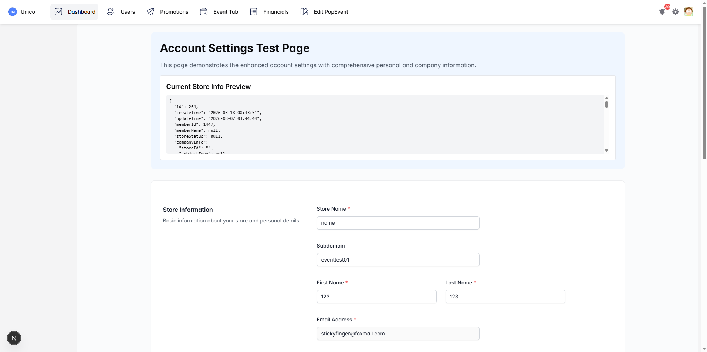
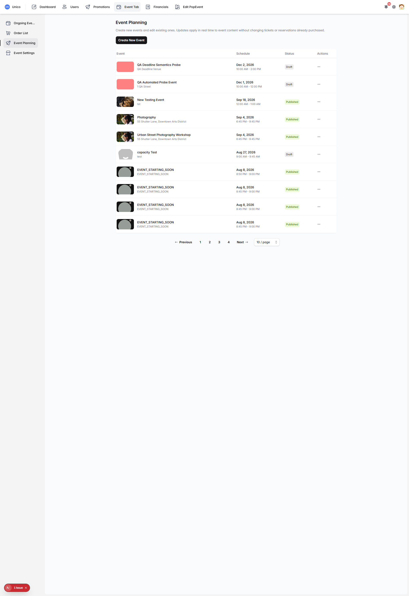
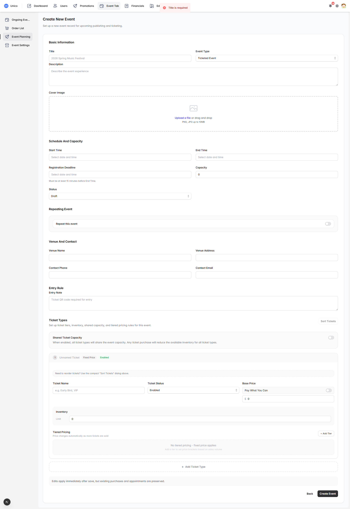
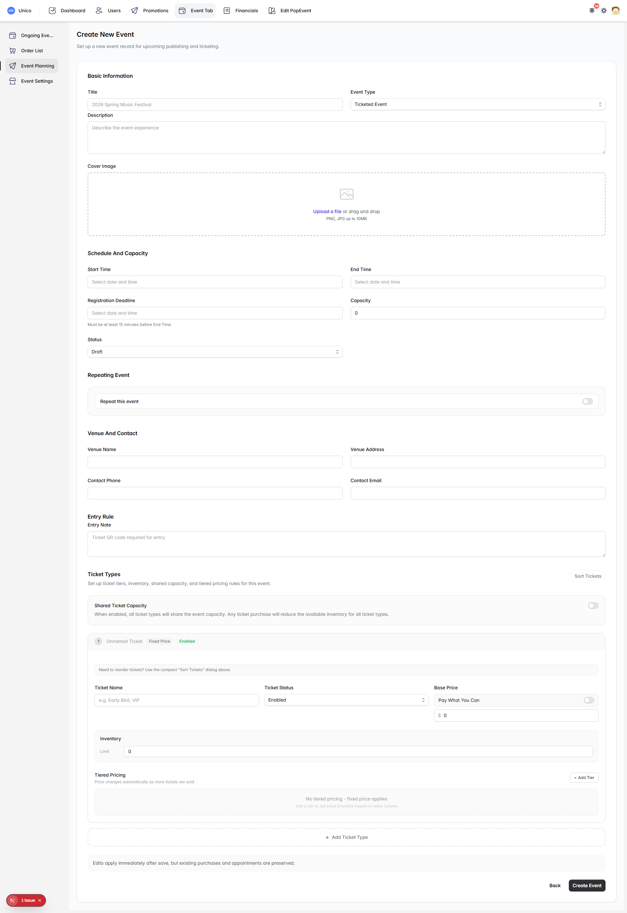
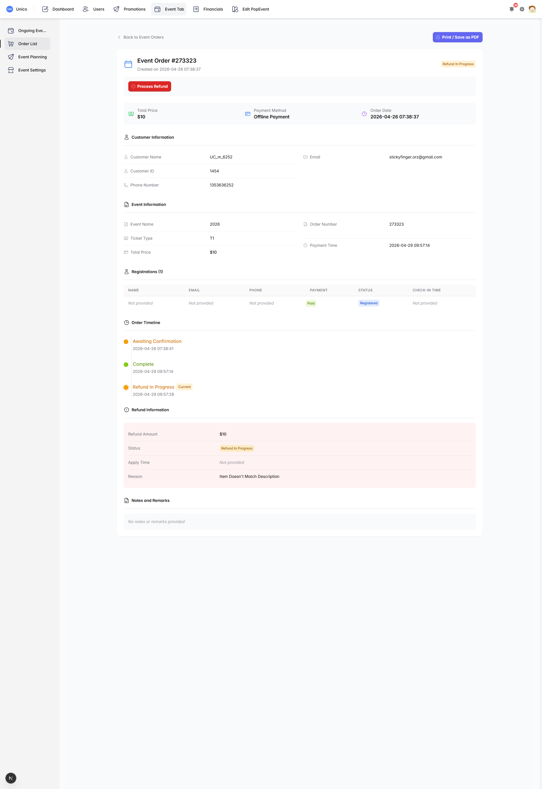

Unico vendor-admin-front · event merchant view · automated exploratory sweep
Sixteen issues found. The core flows work — creating an event succeeds, order search filters, and the recently merged refund status fix displays consistently. The problems are concentrated in three areas: developer-only pages that shipped into the merchant-facing app, validation that is technically correct but very hard to act on, and interface copy that describes something other than what the page does.
| Severity | Count | Theme |
|---|---|---|
| High | 3 | Developer pages exposed to merchants; a scheduling rule that lets registration stay open after an event has begun; a JavaScript error on nearly every page |
| Medium | 7 | Unmarked required fields, transient one-at-a-time validation, search results that cannot be explained, pagination off-by-one, edit-mode copy on the create page |
| Low | 6 | Untranslated text, inconsistent terminology, loading-state flashes, route naming |
fx_order_search_fields. Any judgement below about which fields order search matches reflects the currently deployed backend, not that pending patch.
All seven load inside the real navigation shell, with the merchant's own data, for any logged-in merchant who types the URL. They are not linked from the menu, but nothing blocks them.
/firebase-debug Firebase Debug Dashboard, diagnostics and config validation /firebase-test Firebase Phone Verification Test, sends real SMS /test-account-settings prints the raw store record as JSON /test-firebase-phone Firebase Phone Authentication Test, sends real SMS /test-unread lets you set the global unread counter to any value /test-validation form validation demo page /test/firebase-auth forgot-password flow test
/test-account-settings is the most exposing: it prints the store object directly on the page, including internal identifiers that are not shown anywhere in the real interface.
{ "id": 264, "createTime": "2026-03-18 08:33:51", "memberId": 1447, ... }
Why it matters
Two pages can trigger real SMS sends, which costs money and can be abused. One lets a merchant desynchronise their own notification badge. All seven make the product look unfinished if a merchant finds them.
Suggested fix
Delete the routes, or gate them behind an environment check so they only build outside production.

The form checks the registration deadline only against the end time. It never compares it to the start time. The helper text under the field says the same thing: "Must be at least 15 minutes before End Time."
Reproduced
Created an event with start 10:00 AM, end 2:00 PM, registration deadline 1:00 PM. Accepted with "Event created successfully". Registration stays open for three hours after the event begins.
Where
src/app/events/planning/event-planning-form.jsx:973–984 — the comparison uses endTimestamp only.
Question for product
Is late registration intentional for walk-ins? If yes, the rule is fine and only the helper text needs to explain it. If no, the check should be against start time. This needs a product decision before it is coded.

Observed on the login page, the dashboard, event settings, coupons, order pages and the marketing pages — essentially everywhere.
TypeError: Cannot set properties of null (setting 'onMessageHandler') at onMessage$1 (@firebase/messaging/dist/esm/index.esm2017.js:1176) at onMessageListener (src/services/firebase-messaging.js:56) at ApplicationLayout.useEffect
Why it matters
The visible interface still works, so this is easy to ignore. But the messaging listener is failing to attach, which means push notifications are likely not being delivered in this environment. It also fills the error console, which hides genuine errors during debugging.
Suggested fix
Guard the call in firebase-messaging.js so it returns early when the messaging instance is null, rather than throwing.
The Create Event form requires Title, Start Time, End Time, Cover Image, Venue Name, and at least one Ticket Type. Not one of them carries an asterisk, helper text, or the HTML required attribute. A merchant has no way to know what is mandatory before pressing the button.
Note
The product already has the right pattern elsewhere — the internal /test-validation page documents required fields with asterisks. It was simply not applied to the real form.
Each submit returns the first failure only, as a toast that clears after roughly three seconds. Nothing is marked on the field itself, and the page does not scroll to the problem.
| Attempt | Form state | Message shown |
|---|---|---|
| 1 | Empty | Title is required |
| 2 | Title filled | Start time is required |
| 3 | Title + Venue filled | Start time is required |
Filling the venue changed nothing, because venue is checked fifth. A merchant filling fields out of order gets no credit for the work. Discovering all six requirements takes six separate submits, and any message missed in those three seconds means submitting again to see it.
Suggested fix
Validate all fields at once and mark each failing field inline, keeping the toast as a summary.

The placeholder reads "Search by order ID, event, customer, or phone". Searching does filter, but the matched value is often in none of the visible columns, so the results look arbitrary.
| Search term | Result |
|---|---|
Photography | Correct — four Urban Street Photography Workshop orders |
1017 | One order, ID 273887, titled "Urban Street Photography Workshop". Nothing visible on that row contains 1017 |
Sticky | Filtered to a different set, but no visible column contains "Sticky" |
Suggested fix
Show what matched — either add the matched field as a column, or highlight it in the row. Merchants currently cannot verify that a search did the right thing.
Searching % returns exactly the unfiltered list. The term is being placed into a SQL LIKE pattern without escaping, so the wildcard passes straight through.
Scope
This is not an injection risk — '; DROP TABLE orders;-- was handled safely and returned an empty result, which shows the query is parameterised. The problem is only that % and _ behave as wildcards.
Practical impact
A merchant searching for something like "50% off" gets results that make no sense.
Suggested fix
Escape % and _ in the keyword before building the pattern.
| URL | Behaviour |
|---|---|
?page=0 | Renders the same rows as page 1. The "Previous" button on page 1 links here |
?page=abc | Silently renders page 1 |
?page=-1 | Empty state |
?page=99999 | Empty state (469 pages exist) |
The visible symptom is that "Previous" on the first page appears clickable and takes the merchant to a duplicate of the page they are already on.
Suggested fix
Disable "Previous" on the first page, clamp out-of-range values to the nearest valid page, and treat non-numeric input as page 1.
At the bottom of Create New Event, immediately above the Create button:
Edits apply immediately after save, but existing purchases and appointments are preserved.
On a page that creates a brand-new event, there are no edits and no existing purchases. The form component is shared between create and edit, and this line is not conditioned on which mode it is in.
Where
src/app/events/planning/event-planning-form.jsx:2201
Suggested fix
Show this only in edit mode. In create mode, either omit it or say something true of creating.

In Ongoing Events, event #2495 "EVENT_SETTLEMENT_RELEASE-MQ" is listed as:
Aug 11, 2026 9:00 AM - 8:45 AM
The end time is before the start time. The create form rejects this combination ("End time must be after start time"), so this record was created another way — before the rule existed, or directly through the API.
Why it matters
Whatever produced it, the list presents it as a normal Published event with no warning. If the form guards against this, the display and the API should too.
Suggested fix
Apply the same rule server-side, and have the list flag records that violate it instead of rendering them as ordinary.
Two adjacent header buttons carry the same accessible name. The bell is correct; the settings gear was copy-pasted from it.
<NavbarItem href="/Inbox" aria-label="Inbox"><BellAlertIcon /> ← correct <NavbarItem href="/settings" aria-label="Inbox"><Cog8ToothIcon /> ← wrong
Where
src/app/application-layout.jsx:822
Suggested fix
One-line change to aria-label="Settings". Listed as low only because it does not affect sighted users; for anyone using a screen reader the two buttons are indistinguishable.
Two of the developer pages carry untranslated instructions in an otherwise entirely English product:
/test-firebase-phone 测试说明：• 输入手机号码（如：13800138000）… /test/firebase-auth 测试说明 / 注意事项 …
This is the same class of issue as the developer text already removed from the Edit Event form in hx_display_patch. It disappears on its own if finding 1 is fixed by deleting the routes.
On order #273323, the Customer Information block lists a name, phone and email. The Registrations table directly below shows all three as "Not provided".
Customer Information UC_m_6252 · 1353636252 · stickyfinger.orz@gmail.com Registrations (1) Not provided · Not provided · Not provided
Both may be technically accurate — the order has a purchaser, and the ticket has no separate attendee registered. But shown together they read as a data error.
Suggested fix
When no separate attendee was supplied, say so — for example "Same as purchaser" — rather than "Not provided".

On Event Planning, the empty-state message renders while the request is still in flight, then is replaced by the real list. On a slow connection a merchant may believe they have no events.
Suggested fix
Show a loading state until the request resolves, and the empty state only when the response is genuinely empty.
/events/customers silently redirects to /users/customers. Harmless today, but it means two paths reach one page and only one of them is canonical./Inbox is the only capitalised route in the application; every other one is lowercase. On case-sensitive hosting a link to /inbox would 404.Payment type 2 is labelled differently depending on where the merchant or customer is looking:
| Wording | Where |
|---|---|
| Pay in Person | popapp-mall/pages/order/submit.vue:3124popapp-mall/pages/order/activity-submit.vue:714 |
| Offline Payment | popapp-mall/pages/order/dict/index.ts:127vendor-admin-front/src/app/events/orders/[id]/page.jsx:378 |
A customer chooses "Pay in Person" at checkout; the merchant then sees "Offline Payment" on the order. The inconsistency exists inside the customer app as well, not only between the two applications.
Suggested fix
Pick one term and use it in both applications. This is a copy decision, not an engineering one.
Recording these so the same ground is not covered twice.
| Area | Result |
|---|---|
| Event creation, happy path | Pass Full form with cover image submitted, "Event created successfully", event appears in the list |
| Refund status display | Pass Order #273323 shows "Refund In Progress" consistently in the badge, the timeline and the action button — the merged fx_refund_status_patch behaves correctly |
| Order search by event title | Pass Filters correctly |
| SQL injection through search | Pass '; DROP TABLE orders;-- returned an empty result, no error — query is parameterised |
| Oversized and unicode input | Pass 500-character and emoji search terms returned empty results without error |
| End time before start time | Pass Rejected by the create form |
| 404 handling | Pass Unknown routes render a proper 404 page |
| Route sweep | Pass 37 routes visited; no blank pages, no navigation failures, no server errors |
| Step | Item | Reason |
|---|---|---|
| 1 | Remove the seven developer routes (1) | Largest exposure, smallest change, and it clears finding 12 at the same time |
| 2 | Fix the aria-label (11) and the create-page notice (9) | One line each |
| 3 | Guard the Firebase messaging listener (3) | Clears the console so real errors become visible |
| 4 | Decide the registration deadline rule (2) | Needs a product answer before any code changes |
| 5 | Rework create-form validation (4, 5) | Largest effort, largest gain in day-to-day usability |
| 6 | Search transparency and wildcard escaping (6, 7) | Coordinate with the pending fx_order_search_fields backend patch |
| 7 | Pagination bounds (8), remaining copy items (13–16) | Low risk, batch together |
navigator.webdriver = true, which Google's sign-in rejects, so that approach could not be used for a logged-in session.